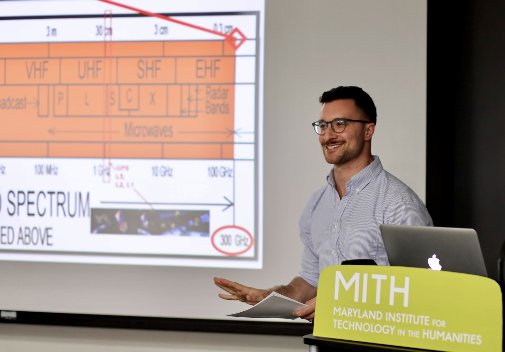

~/jeffreymoro/index.html
> whoami
→Jeffrey Moro, PhD
I’m a writer, teacher, and tinkerer based in Baltimore, Maryland.
My work explores how we use media technologies to understand and represent the natural world, and the consequences of such representations for humanity's relationship with nature.
I’m currently working on a book titled Cloud Studies, which argues that over the past two hundred years of technological history, we've come to imagine the atmosphere as a kind of computer, one that we hope to program as a way out of climate change. I make this argument through readings of a wide array of media arts, alongside allied scientific practices from the history and present of meteorology and climate science: electronic weather diaries, climate simulation games, artificial meteors, and experimental radio art all come together to tell a story about how we turned the atmosphere from something that surrounds and supports human life into an unruly threat that requires computational management and control. Essays related to this project have appeared in the Journal of Environmental Media, Media Fields, and Amodern, among others.
Other research interests of mine include media theory and history, vintage and obsolete computers, software (especially video game) preservation, textual history, media archaeology, technologies of the occult, procedural aesthetics (especially in poetry), nuclear cultures, nature writing, the cultural history of the internet, and barbell weight training.
> ls -affiliations
I hold the position of Assistant Clinical Professor in Digital Humanities and Digital Studies at the Maryland Institute for Technology in the Humanities (MITH) at the University of Maryland, College Park, where I’m also affiliated with African American Digital and Experimental Humanities (AADHum) and the Artificial Intelligence Interdisciplinary Institute at Maryland (AIM). Among my various duties at MITH, I steward its retrocomputing collections, including the Bill Bly and Deena Larsen Collections of Electronic Literature, and run its undergraduate internship program in retrocomputing. I also teach occasionally in UMD’s Immersive Media Design program and the English department's Digital Storytelling and Poetics minor.
I received my PhD in English with a certificate in Digital Studies from the University of Maryland, College Park. I’m also a co-founder of the Immersive Realities Labs for the Humanities (irLh), a multidisciplinary research lab that integrates emerging digital technologies with humanistic critique. Past lives include work as a site manager for Romantic Circles, a born-digital journal of Romantic literary studies, and as a post-baccalaureate resident with Five College Digital Humanities.
> ls recent-posts/
If you’d like to read my blog posts in your inbox, I have a newsletter that mirrors my posts here. I also have an RSS feed.
- 2025-10-13: Intracoastal
- 2025-08-15: Bench Press
- 2025-07-30: Sonnets
- 2025-07-04: Wood
- 2025-06-20: The Heat
You can reach me at jm [at] jeffreymoro [dot] com.